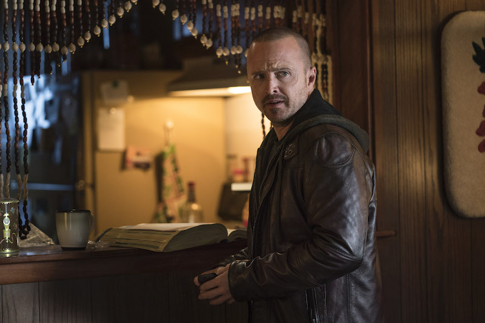

Aaron Paul

Acting Scene from Breaking Bad Movie(ELCAMINO)
Who is Aaron Paul ?
Aaron Paul Sturtevant (born August 27, 1979) is an American actor.
He is best known for
portraying Jesse
Pinkman in the AMC series Breaking Bad (2008–2013)
Awards(2009-2014)
- 2009
- Saturn Award : Best Supporting Actor on Television
- 2010
- Primetime Emmy Award : Outstanding Supporting Actor in a Drama Series
- 2011
- Saturn Award : Best Supporting Actor on Television
- PRISM Award : Male Performance in a Drama Series
- 2012
- Primetime Emmy Award : Outstanding Supporting Actor in a Drama Series
- 2013
- Satellite Award : Best Supporting Actor – Series, Miniseries, or Television Film
- Saturn Award : Best Supporting Actor on Television
- Screen Actors Guild Award : Outstanding Performance by an Ensemble in a Drama Series
- 2014
- Critics' Choice Television Award : Best Supporting Actor in a Drama Series
- Primetime Emmy Award : Outstanding Supporting Actor in a Drama Series